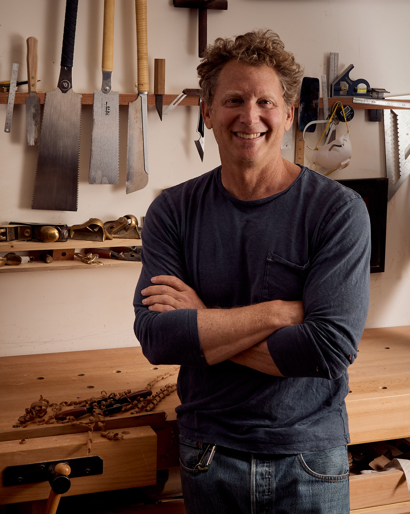

I paddle, surf, sail, and swim. I was a green-haired SoCal kid who eventually swam D1 in college. I still log 5,000 yards a week in the pool. My first wave at age ten blew my mind and, to this day, I surf every chance I get—waves big or small, it doesn't matter. In my twenties, I spent 18 months on a 55-foot sloop sailing around the world. We surfed twenty foot South Pacific waves under bare poles, swam among marine iguanas in the Galapagos and traveled deep up the Kumai River in Borneo in search of fuel.
I started paddling—first prone, then surfski and finally outrigger—to survive surfless days. But outrigger became so much more than a consolation prize. This is the paddler's secret: freedom on the water in an outrigger canoe means endless surfing without the hassle of a crowd, technical challenge, and a truly wonderful community. Over the past thirty years I have paddled all the major channels in California and Hawaii, both solo and with beloved teammates.
If anything rivals time on the ocean, it's losing track of time in my workshop. The patient process of building by hand yields more than a great product. I have come to believe it is often me, the maker, who is the better for it. Learning about the materials, mastering the tools and weathering failures is its own reward.
For the past 25 years I have worked as a clinical psychology and graduate school instructor. Listening, mentoring and solving problems with people is my most highly trained skill.
The combination of the three—seafaring, craftsmanship and collaboration—is what the Mike Litter Ocean Craft endeavor is all about.